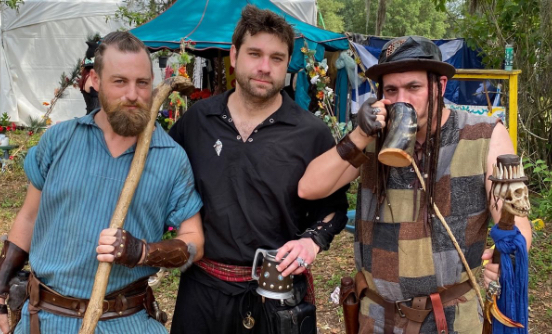

Themed Weekends

September 25 & 26, 2021
Celebrate the time honored tradition of the harvest, commemorating vine to bottle and tree to glass with the fall libations we love. Discover your new favorite Mount Hope Wine!

October 2 & 3, 2021
Raise a stein to German heritage with micro-brewed ales from the Faire’s very own Swashbuckler Brewing Company, the authentic food and dance of the Germanic Nations…and don’t forget your lederhosen!

October 9 & 10, 2021
Share in the Celtic pride of pipers, Celtic wares, foods, music, dancing, and lots o’ those bonnie lasses and kilt clad boyos!